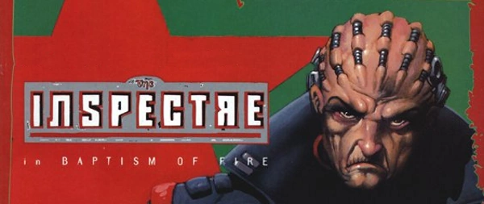

Vicktor Zadek is a sov psi-Judge that survived the destruction of East-Meg One.
Art by Jason Brashill
| Story Title | Parts | Pages | w indicates a wraparound coverCovers | Year(s) | Issues | Writer | Artist | Colourist | Letterer |
|---|---|---|---|---|---|---|---|---|---|
| Requiem | 3 | 24 | 0 | 1996 | M3.23-M3.25 | Jim Campbell Kevin Walkervarious | Kevin Walker | <-- | Gordon Robson |
| Baptism of Fire | 2 | 15 | M3.27: Jason Brashill 1 | 1997 | M3.26-M3.27 | Jim Campbell Kevin Walkervarious | Charles Gillespie | <-- | Annie Parkhouse |
| Damn'd Spirits All | 2 | 14 | 0 | 1997 | M3.28-M3.29 | Jim Campbell Kevin Walkervarious | Charles Gillespie | <-- | Annie Parkhouse |
| Trial by Fury | 4 | 28 | M3.31: Kevin Walker 1 | 1997 | M3.30-M3.33 | Jim Campbell Kevin Walkervarious | Andrew Currie | Del Frost | Annie Parkhouse |
| year | episodes | pages |
| 1986 | 0 | 0 |
| 1987 | 0 | 0 |
| 1988 | 0 | 0 |
| 1989 | 0 | 0 |
| 1990 | 0 | 0 |
| 1991 | 0 | 0 |
| 1992 | 0 | 0 |
| 1993 | 0 | 0 |
| 1994 | 0 | 0 |
| 1995 | 0 | 0 |
| 1996 | 3 | 24 |
| 1997 | 8 | 57 |
| 1998 | 0 | 0 |
| 1999 | 0 | 0 |
| 2000 | 0 | 0 |
| 2001 | 0 | 0 |
| 2002 | 0 | 0 |
| 2003 | 0 | 0 |
| 2004 | 0 | 0 |
| 2005 | 0 | 0 |
| 2006 | 0 | 0 |
| 2007 | 0 | 0 |